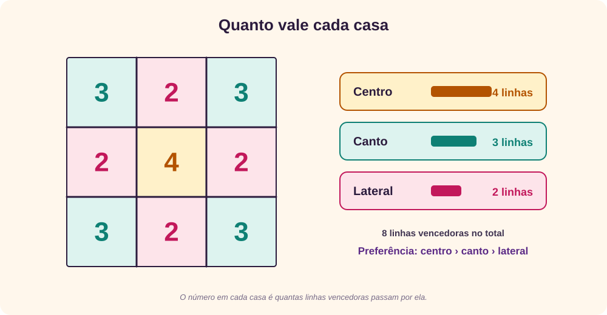
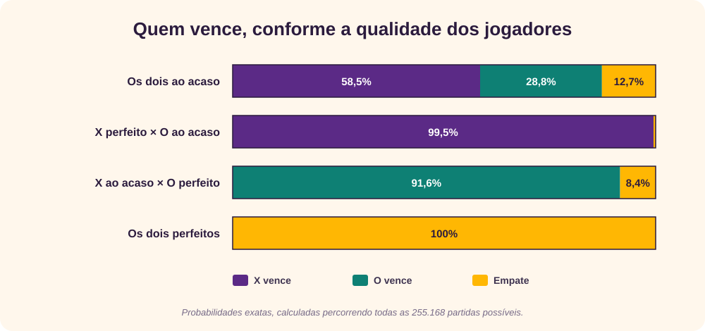

Introdução
O jogo da velha é, provavelmente, o primeiro jogo de estratégia que aprendemos: um tabuleiro de 3×3, dois símbolos, X e O, e o objetivo de alinhar três em linha, coluna ou diagonal. É tão simples que parece não ter segredo. E, de certa forma, não tem: o jogo está resolvido. Se os dois jogadores não errarem, toda partida termina empatada. [1]
Isso não quer dizer que não dê para ganhar. Quer dizer que só se ganha quando o adversário erra. Ganhar no jogo da velha é, portanto, a arte de criar situações em que errar é fácil e acertar é difícil, e de nunca cair nessas situações quando é você quem defende.
Neste artigo veremos por que algumas casas valem mais que outras, quais são as probabilidades de vitória em cada cenário, a ordem de prioridades que garante nunca perder, as aberturas e armadilhas do ataque e as respostas que salvam a defesa. Os números apresentados foram calculados percorrendo a árvore completa do jogo, partida por partida.
Um pouco de história
Jogos de três em linha são muito antigos. Tabuleiros desse tipo foram encontrados gravados em telhas do antigo Egito, e os romanos jogavam o terni lapilli (“três pedrinhas”), em que cada jogador tinha só três peças e as movia pelo tabuleiro. [1] A versão com papel e lápis, como a conhecemos, se popularizou na Inglaterra, onde é chamada de noughts and crosses; nos Estados Unidos, de tic-tac-toe; na Itália, de tris; e no mundo hispânico, de tres en raya.
O jogo também tem lugar na história da computação:
- Em 1952, A. S. Douglas programou o OXO no computador EDSAC, da Universidade de Cambridge, um dos primeiros jogos digitais com saída gráfica. [2]
- Em 1961, Donald Michie construiu o MENACE, uma “máquina” feita de 304 caixas de fósforos e contas coloridas que aprendia a jogar por tentativa e erro, um ancestral do aprendizado por reforço. [3]
- Em 1972, Allen Newell e Herbert Simon descreveram a lista de regras que um jogador segue para nunca perder, a mesma que veremos adiante. [4]
- No filme Jogos de Guerra (WarGames, 1983), um computador militar aprende, jogando o jogo da velha contra si mesmo, que certas disputas não têm vencedor: “a única jogada vencedora é não jogar”. [5]
O tabuleiro em números
Apesar de pequeno, o tabuleiro esconde uma quantidade razoável de possibilidades:
- 8linhas vencedoras: 3 linhas, 3 colunas e 2 diagonais
- 255.168partidas diferentes possíveis, contando a ordem das jogadas
- 5.478posições que podem aparecer numa partida
- 765posições realmente diferentes, descontando rotações e reflexos
A informação mais útil, porém, é outra: as casas não valem o mesmo. O centro participa de 4 das 8 linhas vencedoras; cada canto, de 3; e cada lateral, de apenas 2. Quem ocupa o centro participa de metade das formas de vencer e, ao mesmo tempo, atrapalha metade das formas de o adversário vencer.

Outro fato importante: como o X começa, ele faz até 5 jogadas e o O, no máximo 4. Essa vantagem de iniciativa aparece em todas as estatísticas a seguir.
Probabilidades
Se contarmos as 255.168 partidas possíveis, 131.184 terminam com vitória do X (51,4%), 77.904 com vitória do O (30,5%) e 46.080 empatadas (18,1%). A partida mais curta possível tem 5 jogadas, e a mais longa, 9:
| Jogadas | Vitórias do X | Vitórias do O | Empates |
|---|---|---|---|
| 5 | 1.440 | — | — |
| 6 | — | 5.328 | — |
| 7 | 47.952 | — | — |
| 8 | — | 72.576 | — |
| 9 | 81.792 | — | 46.080 |
| Total | 131.184 | 77.904 | 46.080 |
Contar partidas, no entanto, não é o mesmo que calcular a chance de vencer, porque partidas curtas são mais prováveis do que partidas longas. Se os dois jogadores escolherem casas ao acaso, a probabilidade exata é de 58,5% para o X, 28,8% para o O e 12,7% de empate. O quadro muda completamente quando um dos lados joga bem:

Três lições saem desse gráfico:
- Jogar bem quase sempre vence quem joga mal. Um X perfeito vence 99,5% das partidas contra um adversário que joga ao acaso.
- Jogar bem nunca perde. Mesmo começando em desvantagem, um O perfeito nunca é derrotado e vence 91,6% das vezes contra um X aleatório.
- Dois jogadores perfeitos sempre empatam. É por isso que, entre adultos atentos, o jogo costuma acabar em “velha”.
A primeira jogada também influencia as chances. Contra um adversário que joga ao acaso, abrir no centro dá ao X 69,3% de vitórias; no canto, 60,7%; e na lateral, 53,6%. Mas, quando o X joga perfeitamente depois da abertura, o canto passa à frente (99,5%, contra 99,0% do centro e 98,7% da lateral), porque contra o canto só existe uma resposta correta. Veremos isso em detalhes na seção de ataque.
A ordem de prioridades
Newell e Simon mostraram que é possível jogar de forma perfeita seguindo uma lista simples: a cada vez, escolha a primeira regra da lista que puder ser aplicada. [4] Quem segue essa lista nunca perde.
- Vencer. Se você tem duas peças numa linha com a terceira casa livre, jogue nela.
- Bloquear. Se o adversário tem duas peças numa linha com a terceira casa livre, ocupe-a.
- Criar um garfo. Jogue numa casa que crie duas ameaças de vitória ao mesmo tempo.
- Impedir o garfo do adversário. Se houver uma única casa onde ele faria um garfo, ocupe-a. Se houver mais de uma, crie uma ameaça de duas em linha que o obrigue a se defender, desde que essa defesa não lhe dê um garfo.
- Centro. Jogue no centro, se estiver livre.
- Canto oposto. Se o adversário está num canto, jogue no canto oposto.
- Canto livre. Jogue em qualquer canto vazio.
- Lateral livre. Jogue em qualquer lateral vazia.
As regras 1 e 2 parecem óbvias, mas são as que mais se esquece na prática: muita gente fica tão concentrada no próprio plano que não vê a ameaça do adversário, ou deixa passar a própria vitória. Antes de cada jogada, faça duas perguntas: “posso ganhar agora?” e “ele pode ganhar na próxima?”.
Ataque: aberturas e garfos
No jogo da velha, ninguém vence com uma ameaça só, porque uma ameaça simples sempre pode ser bloqueada. A vitória vem do garfo (em inglês, fork): uma jogada que cria duas ameaças ao mesmo tempo. O adversário bloqueia uma, e você completa a outra. Todo o ataque consiste em preparar um garfo.
A escolha da abertura define quantas chances o adversário tem de errar:
- Canto (a abertura mais traiçoeira). Das 8 respostas possíveis, só uma empata: o centro. Qualquer outra perde contra jogo correto. Contra pessoas que ainda não conhecem essa regra, é a melhor escolha.
- Centro (a abertura mais sólida). Das 8 respostas, as 4 laterais perdem e os 4 cantos empatam. É a abertura que mais vence contra jogadas aleatórias, mas o adversário tem mais caminhos para se salvar.
- Lateral (a abertura mais fraca). Também há 4 respostas que perdem, mas as chances de vitória do X são as menores, e quem abre na lateral precisa jogar com mais cuidado.
Algumas armadilhas para o ataque, sempre com o X começando:
- Canto e lateral. X abre no canto e O responde numa lateral. X toma o centro, ameaçando a diagonal; O é obrigado a bloquear no canto oposto; X joga no canto que forma duas ameaças. É o garfo da figura acima.
- Canto e canto. X abre no canto e O responde em outro canto. X joga num terceiro canto, criando uma ameaça; depois do bloqueio, o último canto livre cria o garfo.
- Centro e lateral. X abre no centro e O responde numa lateral. X joga num canto, criando uma ameaça na diagonal; O bloqueia no canto oposto; X joga no canto que alinha com as duas peças e cria o garfo.
- Centro e canto oposto. X abre no centro, O responde num canto e X joga no canto oposto ao do O. Agora O precisa jogar em outro canto; se jogar numa lateral, perde. É a armadilha mais sutil contra quem respondeu bem à primeira jogada.
Defesa: as respostas certas
Quem joga com o O está em desvantagem e, contra um adversário perfeito, joga pelo empate. A boa notícia é que a defesa se resume a poucas respostas que precisam ser memorizadas:
- Se o X abre no canto, jogue no centro. É a única resposta que não perde.
- Se o X abre no centro, jogue num canto. Nunca numa lateral.
- Se o X abre na lateral, as respostas seguras são o centro, os dois cantos vizinhos à peça do X e a lateral oposta.
- A armadilha dos cantos opostos. Se o X abriu no canto, você respondeu no centro e o X jogou no canto oposto, jogue numa lateral. Aqui o instinto de “preferir cantos” engana: um canto permite ao X montar um garfo.
Depois dessas primeiras jogadas, a defesa segue a ordem de prioridades: bloqueie sempre que houver duas em linha e, quando puder, crie suas próprias ameaças para forçar o X a responder. Defender atacando tira do adversário o tempo de que ele precisa para montar um garfo.
Jogando contra pessoas
A teoria diz que o jogo empata; a prática mostra que pessoas erram, principalmente crianças e jogadores distraídos. Pesquisas com crianças mostram que as estratégias evoluem com a idade: primeiro aprendem a vencer quando têm duas em linha, depois a bloquear e, só bem mais tarde, a criar e a impedir garfos. [6] Algumas dicas práticas:
- Com o X, abra no canto. A resposta instintiva de muita gente é jogar ao lado ou no canto oposto, e as duas perdem.
- Varie as aberturas. Quem repete sempre o mesmo início ensina o adversário a se defender dele.
- Force as respostas. Cada ameaça obriga o adversário a jogar onde você quer. Encadeie ameaças até que a última delas seja um garfo.
- Com o O, não copie o adversário. Responder a um canto com outro canto parece simétrico e seguro, mas perde.
- Em séries de partidas, alterne quem começa. Quem sempre começa tem uma vantagem real contra jogadores imperfeitos.
O cartunista Randall Munroe resumiu toda a estratégia ótima num único desenho: o mapa completo das jogadas certas do X e do O, para qualquer posição. [7] Cabe numa página, e é a melhor prova de que o jogo tem solução.
Jogue contra a máquina
Hora de colocar as técnicas em prática. No nível fácil, a máquina joga ao acaso. No médio, ela vence quando pode e bloqueia suas ameaças, mas não enxerga garfos. No impossível, ela calcula a árvore completa do jogo e nunca perde. Quem começa joga com o X.
- Você
- 0
- Empates
- 0
- Máquina
- 0
Desafio: no nível médio, tente vencer usando uma das armadilhas da seção de ataque. No impossível, o melhor resultado que você pode conseguir é o empate.
Além do 3×3
Como o jogo clássico empata, surgiram variantes para devolver o desafio:
- Jogo da velha invertido (misère): perde quem alinhar três. Também empata com jogo perfeito; uma estratégia conhecida para o X é jogar no centro e, depois, sempre na casa simetricamente oposta à do O.
- Jogo da velha 4×4: com quatro em linha num tabuleiro maior, o jogo continua terminando empatado com jogo perfeito.
- Qubic (4×4×4): o jogo da velha em três dimensões. Oren Patashnik demonstrou, em 1980, com ajuda de computador, que o primeiro jogador pode sempre vencer. [8]
- Gomoku: cinco em linha num tabuleiro de 15×15. Victor Allis demonstrou, em 1994, que o primeiro jogador vence na versão livre, o que levou à criação de regras de compensação. [9]
- Ultimate tic-tac-toe: nove tabuleiros dentro de um tabuleiro maior, em que a casa onde você joga define em qual tabuleiro o adversário deve jogar a seguir. Pequeno nas regras e enorme em estratégia. [10]
Conclusão
Ganhar no jogo da velha não depende de sorte, mas de dois hábitos: no ataque, criar posições em que só existe uma resposta correta; na defesa, conhecer essa resposta. Com o X, abra no canto e procure o garfo. Com o O, responda ao canto com o centro, ao centro com um canto e, nos cantos opostos, jogue na lateral. E, a cada jogada, verifique primeiro se pode vencer e depois se precisa bloquear.
Seguindo essas regras, você nunca perderá. Se o adversário também as conhecer, a partida terminará empatada, e isso também é uma lição: num jogo resolvido, o melhor resultado possível contra quem não erra é não perder.
Referências
- Wikipedia, "Tic-tac-toe", acesso em 17/10/2026, en.wikipedia.org/wiki/Tic-tac-toe.
- Wikipedia, "OXO (video game)", acesso em 17/10/2026, en.wikipedia.org/wiki/OXO_(video_game).
- Michie, Donald, "Experiments on the mechanization of game-learning. Part I: Characterization of the model and its parameters", The Computer Journal, v. 6, n. 3, p. 232–236, 1963.
- Newell, Allen; Simon, Herbert A., Human Problem Solving, Prentice-Hall, 1972.
- Wikipedia, "WarGames", acesso em 17/10/2026, en.wikipedia.org/wiki/WarGames.
- Crowley, Kevin; Siegler, Robert S., "Flexible strategy use in young children’s tic-tac-toe", Cognitive Science, v. 17, n. 4, p. 531–561, 1993.
- Munroe, Randall, "Tic-Tac-Toe", xkcd 832, acesso em 17/10/2026, xkcd.com/832.
- Patashnik, Oren, "Qubic: 4×4×4 Tic-Tac-Toe", Mathematics Magazine, v. 53, n. 4, p. 202–216, 1980.
- Allis, L. Victor, Searching for Solutions in Games and Artificial Intelligence, tese de doutorado, Universidade de Limburg, Maastricht, 1994.
- Orlin, Ben, "Ultimate Tic-Tac-Toe", Math with Bad Drawings, acesso em 17/10/2026, mathwithbaddrawings.com.